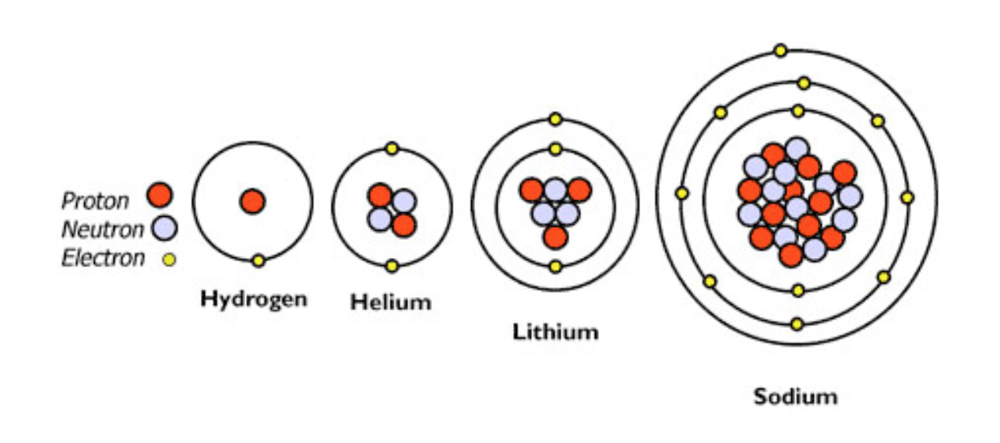
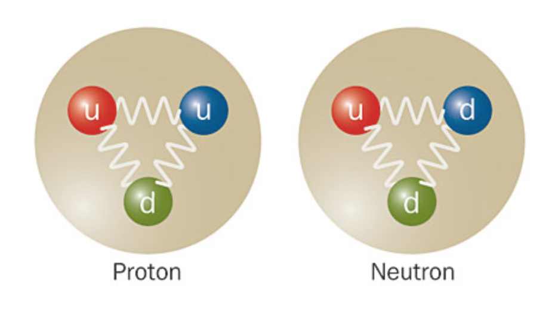
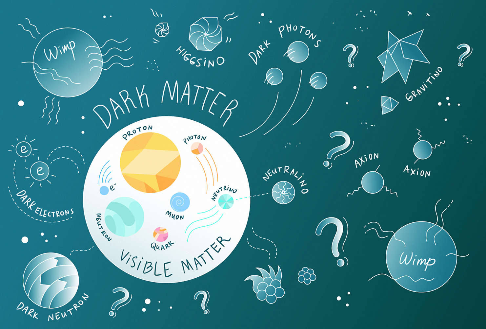
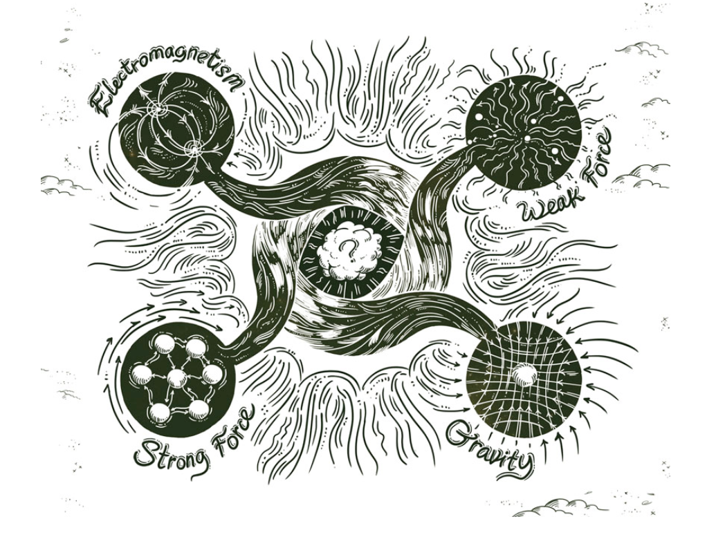
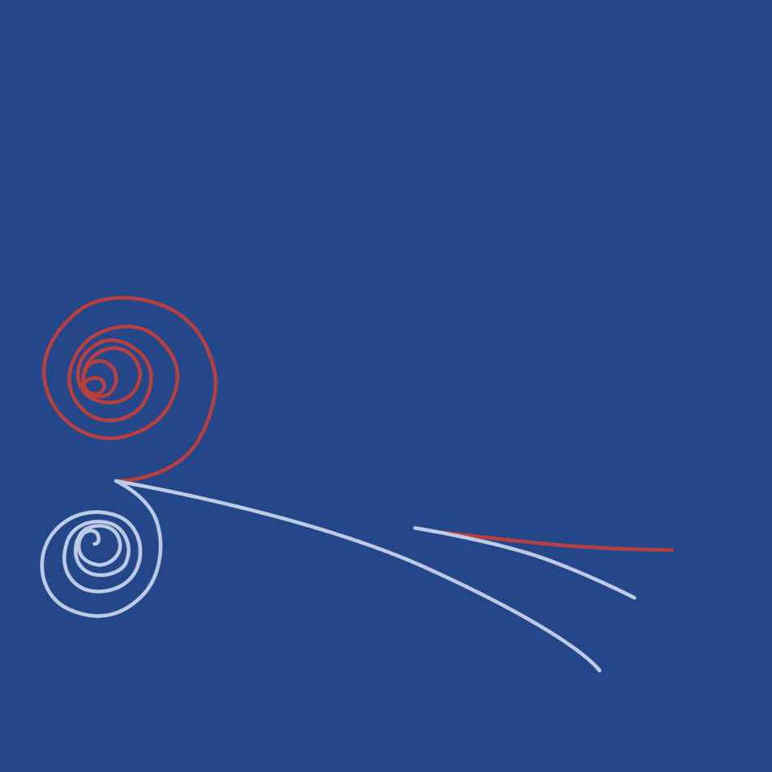
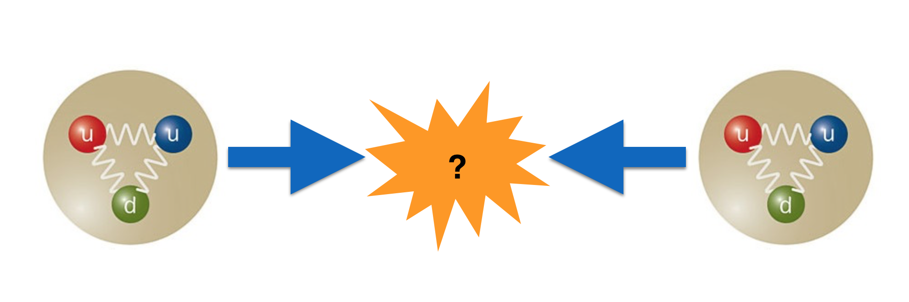
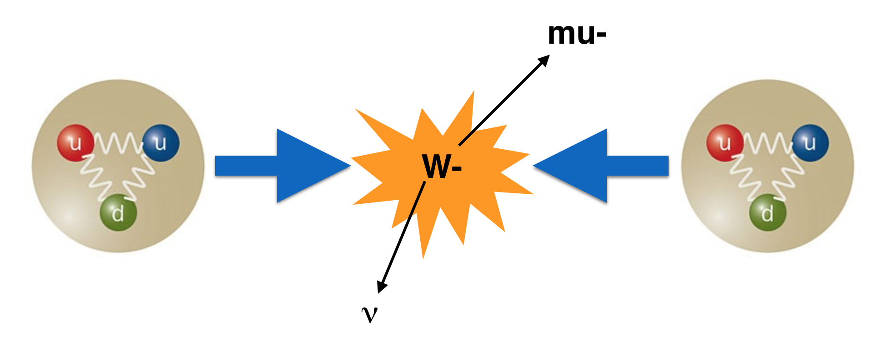
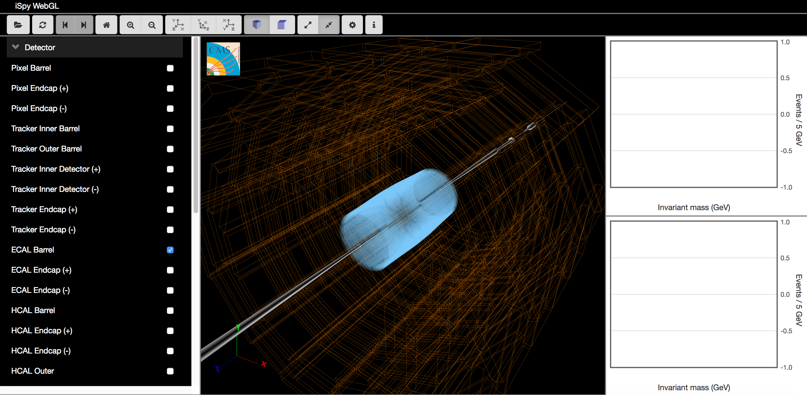

Playing with Data
Tom McCauley
University of Notre Dame, USA
Cultural Collisions - Canada
10-13 Apr 2018, Toronto
What do we know?
We know that Universe started out very small, hot, and dense and from this beginning grew larger and cooler, forming our current Universe

We know that there are four fundamental forces of Nature: Gravity, the Strong force, the Weak force, and Electromagnetism
The Electromagnetic force binds electrons to the nucleus
The Strong force binds protons and neutrons together in the nucleus
The proton and neutron actually are made up of smaller particles called “quarks”. The Strong force holds together the protons and neutrons.
The Weak force governs radioactive decay: for example, when a neutron decays into a proton
We know that these are the fundamental particles

The three forces: Strong, Electromagnetism, and Weak, and these fundamental particles (and how they interact) make up the Standard Model of Particle Physics.
What don't we know? (a short list)
What is the Universe made of?
Only 4% of it is made up of the matter we know about.
How do the four forces fit together?
How does Gravity (which governs the large-scale structure of the Universe) fit together with the other three forces? And why is it so weak compared to them?
Where is all the anti-matter?
Every particle has an anti-particle and in the early Universe they should have been in equal amounts. Now however, anti-matter is very, very rare.
What about particle mass? Why do they have the ones that they do?
How do we go about answering these questions?
How do we go about answering these questions?
The answer is (partially): smash particles together at high energy and see what happens.

The Large Hadron Collider (LHC) at CERN is buried around 100 meters below the surface of the French/Swiss border and has a circumference of 27 kilometers
The LHC collides protons (hadrons) together. What happens when two protons collide at very high energy?
In some collsions, to give one example, a W boson gets produced and decays into a muon (which we can detect) and a neutrino (which we can’t)
In general, we look for the stable particles left over from decays of unstable particles that we can create in the collisions, for example: W, Z, H. We also look for entirely new particles that may have been created in the collisions and look for their decay products.
How?
By building a detector (actually multiple detectors) that consist of layers of material that exploit the different properties of particles to catch and measure the energy and momentum of each one.
CMS needed (and has):
- a high quality central tracking system to give accurate momentum measurements,
- a high resolution method to detect and measure electrons and photons (an electromagnetic calorimeter),
- a “hermetic” hadron calorimeter, designed to entirely surround the collision and prevent particles from escaping, and
- a high performance system to detect and measure muons
Let's look at the LHC and CMS

CMS is like a 14,000 ton digital camera with around 75 megapixels that takes 40 million pictures per second!
Let's look at some events
CMS is more than just a detector. It's a collaboration of around 3000 scientists and engineers from over 190 institutes in 47 countries.
Links
Thank you
Image credits (unless otherwise already credited): Sandbox Studio, Tai Sakuma, Wikipedia,